Denkblockaden. Jede:r Kreativschaffende kennt und fürchtet sie. Insbesondere wenn man im Beruf auf seine Kreativität angewiesen ist, kann eine kreative Blockade zum großen Problem werden. Aufträge stauen sich, Kund:innen müssen warten, der Stresspegel steigt …. Je verkrampfter man dann versucht, trotz der Denkblockade weiter zu arbeiten, desto schlimmer wird es. Bis man für den Tag verzweifelt aufgibt. Durch die Covid-19 Pandemie wurde dieses Problem noch verstärkt, denn der Austausch mit Gleichgesinnten wurde deutlich erschwert.
Was kann helfen? Das kreative Denken wird von vielen verschiedenen Faktoren beeinflusst,
insbesondere auch durch unsere Stimmung. Unsere Stimmung kann wiederum durch Musik verändert werden.
Recherchen haben ergeben, dass aktives Musizieren insbesondere in Kombination mit Bewegung unsere
Stimmung aktiv so verändern kann, dass das kreative Denken gefördert wird. Hier setzt Motic an.
Viele Menschen würden die Vorteile des Musizierens gerne nutzen, können oder wollen allerdings kein
Instrument lernen. Für diese Menschen bietet Motic eine Möglichkeit, ohne Vorkenntnisse und mit
möglichst wenig Regeln die Vorteile des Musizierens zu entdecken und dabei spielerisch mit anderen
kreativen Menschen zusammen zu arbeiten.
Keine Geste erkannt.
Motic ist ein Medium, welches Handbewegungen erkennt und in Töne umwandelt. Es funktioniert dabei
mit mehr als zwei Händen, damit mehrere Personen über Motic in eine Interaktion miteinander treten
können. Sie müssen sich zusammen bewegen, um eine harmonische Melodie zu erzeugen. Durch Motic
brauchen sie darüber hinaus allerdings keinerlei Kenntnisse im Musizieren zu haben. Weiterhin wird
durch die alleinige Nutzung der Hände ebenfalls gesichert, dass nicht zu viele Regeln erlernt werden
müssen.
So können zum Beispiel über die Position der Hand unterschiedliche Töne abgespielt werden. Die Gesten Faust, halboffene Handfläche und offene Handfläche bestimmen dabei die Lautstärke des Tons mit der Faust für laut und offene Handfläche für leise.
Motic eröffnet einer breiten Gruppe an Menschen die Vorteile des Musizierens. Durch die
Kombination aus Bewegung und Musik wird das kreative Denken gefördert, Denkblockaden können
aufgelöst und das Gemeinschaftsgefühl zwischen Kreativschaffenden gefördert werden..
Try it yourself!
Wir sind team4real.
Im vierten Semester des Studiengangs Interactive Media Design der Hochschule Darmstadt ist das
Projekt Motic entstanden. Unser Ziel war es, ein Produkt zu entwickeln, das den Anwendern (und in
der Entwicklung auch uns) Spaß macht. Wie in den letzten zwei Semestern fand die Arbeit am Projekt
wieder fast vollständig präsenzfrei statt.
Wir hoffen unser erlebbares Management Summary gefällt euch, euer team4real.